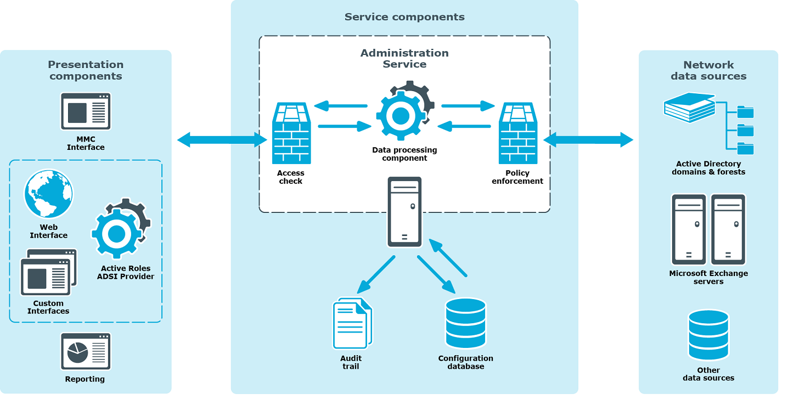

An advanced administrative platform for Active Directory and Microsoft Exchange, Active Roles delivers a comprehensive solution that modern corporate network professionals demand. It enables:
-
Provisioning and administration of Active Directory objects, such as users, groups, and computer accounts
-
Enforcement of corporate administrative policies and standards
-
Automation of structured administrative processes
-
Integration with network data sources other than Active Directory
-
Deployment of flexible, rules-based administrative views
-
Role-based delegation of administrative responsibilities
Active Roles is an advanced administrative platform that facilitates administration and provisioning for Active Directory and Exchange. Active Roles enables organizations to implement a flexible administration framework that suits their needs, while ensuring secure delegation of tasks, reduced workload, and lower costs. It also enables the integration of diverse corporate data sources and provisioning processes, which can expedite business workflow and eliminate data inconsistencies.
Active Roles makes use of DCOM technology to distribute the workload into a number of functional layers, including user interfaces, service components, and network data sources:

The Active Roles ADSI Provider operates as part of Presentation Components along with any custom user interface or application to enable it to exchange data with the Active Roles Administration Service. The ADSI Provider translates a client's requests into DCOM calls and sends them to Administration Service. Upon receiving of an operation request from a client, the Administration Service:
-
Checks up on whether the client has sufficient permissions to perform the requested operation
-
Ensures that the requested operation does not violate the corporate administrative policies
-
Performs all actions that the corporate administrative policies require to be taken before committing the request to directory services
-
Issues the Windows Server function calls to perform the requested operation
-
Performs all actions that the corporate administrative policies require to be taken after the request is processed by the operating system
 Related Topics
Related Topics